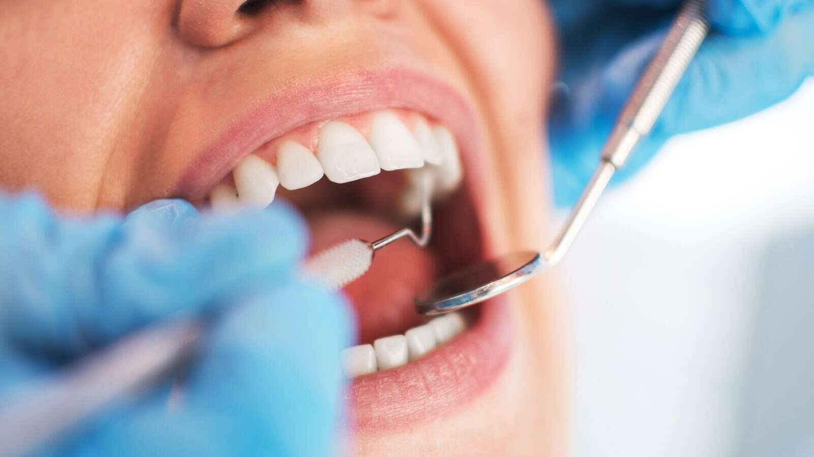
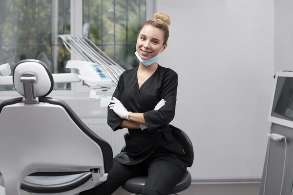

Soins dentaires et diagnostic : comprendre l’examen dentaire
Fiche conseil · 15 min de lecture

Une dent qui ne fait pas mal peut-elle malgré tout nécessiter une attention particulière ? Oui. Certains problèmes bucco-dentaires évoluent sans gêne immédiate. Les soins dentaires et le diagnostic ne se résument pourtant ni à une radiographie ni à un traitement décidé d’avance : l’examen s’appuie sur vos symptômes, vos antécédents et les observations du praticien.
Il est légitime de vouloir savoir ce qui est vérifié et pourquoi un examen complémentaire peut être proposé. Le dépistage repère des signes qui méritent attention ; le diagnostic interprète ces signes pour identifier un problème éventuel ; le traitement répond à cette évaluation. Une radiographie n’est donc pas systématique : son utilité dépend de la situation clinique, et le praticien peut vous en expliquer la raison.
Dans cet article, vous découvrirez les principales étapes d’un examen dentaire, la manière dont les observations orientent les décisions de soins et les questions à poser pour comprendre les options envisagées. Au cabinet du Dr Patrick Lellouche, à Charenton-le-Pont, l’échange et l’examen permettent d’évaluer la situation avant d’aborder les soins, même en l’absence de douleur.
Points Clés
- Distinguez le dépistage, l’examen clinique, le diagnostic et le soin pour mieux comprendre chaque étape de la consultation.
- Préparez les informations utiles sur vos symptômes, vos traitements et vos antécédents afin d’éclairer l’évaluation bucco-dentaire.
- Comprenez pourquoi l’examen visuel et la radiographie ne répondent pas aux mêmes questions, et pourquoi l’imagerie n’est pas systématique.
- Découvrez comment les soins dentaires et le diagnostic peuvent conduire à différentes suites, du conseil à un soin adapté aux constatations.
- Découvrez le cabinet conventionné du Dr Patrick Lellouche à Charenton-le-Pont et le rôle de l’examen avant les soins envisagés.
Soins dentaires et diagnostic : à quoi sert l’examen bucco-dentaire ?
L’examen bucco-dentaire met en relation les observations du praticien, ce que vous ressentez et votre situation de santé. Le diagnostic consiste à interpréter ces éléments pour comprendre un problème éventuel et déterminer la conduite à tenir. Un soin ne se décide donc pas à partir d’un signe isolé : il dépend de l’ensemble des constatations et de leur contexte.
Ces étapes se complètent, mais ne désignent pas la même chose. Le dépistage repère des signes ou des risques qui méritent attention. L’examen clinique correspond à l’observation de la bouche et aux vérifications réalisées par le dentiste. Le diagnostic est la conclusion tirée de ces éléments. Le soin, enfin, est une intervention destinée à traiter une affection ou à préserver la santé bucco-dentaire.
Que cherche à repérer le dentiste lors de l’examen ?
Le praticien observe les dents, les gencives et les autres tissus de la bouche. Il peut rechercher, par exemple, une carie, une inflammation gingivale ou une dent endommagée. Il tient aussi compte des signes que vous décrivez, comme une sensibilité, une gêne à la mastication ou un saignement. Leur localisation, leur évolution et les circonstances dans lesquelles ils apparaissent aident à orienter l’examen.
Un symptôme ne suffit pas toujours à établir une conclusion. Une zone sensible peut avoir plusieurs explications, tandis qu’une anomalie visible doit être interprétée selon son emplacement, son aspect et les autres constatations. Le diagnostic repose sur une appréciation d’ensemble, et non sur une association automatique entre un symptôme et un traitement.
L’absence de douleur n’exclut pas l’intérêt d’une consultation. Certaines atteintes dentaires ou gingivales peuvent rester peu perceptibles au début. Un examen peut aider à repérer une évolution avant qu’elle ne provoque de gêne. Il permet également de faire le point sur la bouche et d’adapter les conseils de prévention à votre situation.
Diagnostic et soins : quelle différence ?
Une fois les observations rassemblées, le dentiste les explique et précise ce qu’elles permettent de conclure. Selon les résultats et vos besoins, la suite peut être un conseil, une surveillance, un soin ou une évaluation complémentaire. Si plusieurs options sont possibles, leur pertinence dépend notamment de la nature du problème et de son évolution. Un diagnostic ne signifie donc pas qu’un acte doit nécessairement être réalisé immédiatement.
Les soins dentaires et le diagnostic s’inscrivent dans une démarche où la compréhension précède la décision. Pour illustrer la place du diagnostic dans la formation dentaire, vous pouvez consulter le National Board Dental Examination, examen américain qui aborde notamment le diagnostic oral. Il s’agit d’un repère pédagogique, et non d’une recommandation de soins en France.
Le diagnostic relie les constatations à une décision de soins expliquée et adaptée à chaque patient.
Comment se déroule un diagnostic dentaire, de l’échange à l’évaluation ?
Le diagnostic se construit progressivement. L’échange précise d’abord le motif de la consultation. L’examen de la bouche apporte ensuite des observations que le praticien met en perspective avec les informations recueillies. Enfin, une synthèse permet d’expliquer les constatations et les suites envisageables. Comprendre ces étapes aide à voir comment les soins dentaires et le diagnostic contribuent à une décision adaptée.
Le déroulement varie selon la situation. Un examen clinique peut suffire à répondre à la question posée. Si certains éléments restent à préciser, une évaluation complémentaire peut être proposée, avec une explication de son utilité. L’examen initial et les investigations éventuelles sont distincts : ils n’ont pas nécessairement lieu au même moment ni à chaque consultation.
Le déroulement peut se résumer ainsi :
- ÉchangerPréciser le motif de la consultation et les symptômes ressentis.
- ExaminerObserver la bouche et mettre les constatations en regard de la situation décrite.
- Faire une synthèseExpliquer les éléments relevés et ce qu’ils permettent, ou non, de conclure.
- Envisager la suiteDiscuter d’un conseil, d’une surveillance, d’un soin ou d’une évaluation complémentaire selon les besoins.
Pourquoi les symptômes et les antécédents comptent-ils ?
La localisation d’une gêne, le moment où elle apparaît et son évolution orientent les questions du praticien. Une sensibilité en mangeant, par exemple, ne révèle pas à elle seule la cause du problème, mais aide à préciser ce qui doit être examiné. Décrivez ce que vous ressentez avec vos propres mots, même si le symptôme est intermittent.
Signalez également vos traitements en cours, vos allergies et vos antécédents médicaux ou dentaires. Ces renseignements complètent l’examen clinique et aident le praticien à interpréter les observations en tenant compte de votre situation.

Comment les observations sont-elles expliquées au patient ?
Après l’examen, vous pouvez demander quels éléments ont été observés, ce qu’ils suggèrent et si certains points restent à éclaircir. Une explication accessible aide à distinguer une constatation, une hypothèse et une conclusion. Si le résultat n’est pas certain, cette limite peut être précisée avant d’envisager une démarche supplémentaire.
Selon la situation clinique, plusieurs suites peuvent être discutées. Le praticien peut expliquer pourquoi un suivi ou un soin est proposé, et à quoi servirait une évaluation complémentaire si elle est nécessaire. Les soins dentaires et le diagnostic s’articulent autour d’observations expliquées, pour que vous compreniez les options et preniez part à la décision.
Au cabinet du Dr Patrick Lellouche, à Charenton-le-Pont, l’échange et l’évaluation précèdent les soins envisagés. Pour découvrir le cabinet dentaire à Charenton-le-Pont, consultez sa présentation.
Examen clinique ou radiographie dentaire : quelle méthode pour quelle question ?
L’examen clinique et la radiographie n’apportent pas les mêmes informations. Le premier repose sur l’observation directe et l’évaluation des signes présents dans la bouche. La seconde peut compléter cette appréciation lorsqu’une question ne peut pas être éclaircie par le seul examen visuel. Le choix dépend donc de ce que le dentiste cherche à comprendre, et non d’un protocole identique pour tous les patients.
Une radiographie n’est pas automatiquement nécessaire à chaque consultation. Le praticien évalue l’information recherchée et la pertinence de l’imagerie dans la situation examinée. Si une radiographie est envisagée, demandez quelle question elle doit aider à éclaircir et comment son résultat pourrait orienter la suite.
Que peut montrer l’examen clinique ?
En observant les dents, les gencives et les autres tissus de la bouche, le dentiste évalue les signes visibles en fonction du motif de consultation. Il tient compte, par exemple, d’une zone qui paraît altérée, d’une gencive rouge ou d’une sensibilité que vous décrivez. Ces constatations sont mises en relation avec vos symptômes et les éléments de votre histoire médicale, plutôt qu’interprétées isolément.
L’apparence ne révèle toutefois pas tout. Une dent qui semble intacte ne permet pas nécessairement de répondre à toutes les questions cliniques. À l’inverse, un signe visible ne suffit pas toujours à en déterminer la cause. L’examen direct fournit des repères importants, mais sa portée dépend de la situation et des éléments à évaluer.
Quand une radiographie peut-elle compléter l’examen ?
Une imagerie peut être envisagée lorsque le praticien estime qu’elle aidera à préciser une question diagnostique. Elle peut représenter des éléments qui ne sont pas directement visibles lors de l’examen de la bouche. Le type d’image dépend de l’objectif clinique : il n’existe pas de protocole universel à appliquer à chaque patient.
La décision s’appuie sur les constatations déjà faites, les symptômes rapportés et les informations recherchées. Si une radiographie est proposée, le praticien peut en expliquer la raison et la place dans l’évaluation. Vous pouvez ainsi comprendre comment l’image complète l’examen, sans la confondre avec un soin ni présumer de ce qu’elle montrera.
Pour aborder les soins dentaires et le diagnostic avec des repères clairs, posez une question simple : « Quel point cet examen complémentaire doit-il préciser ? » La réponse aide à distinguer ce qui a été observé directement de ce qui nécessite une exploration supplémentaire. Le choix se fait au cas par cas, selon l’information utile à la prise en charge.
Après le diagnostic dentaire : comprendre les résultats et les suites possibles
Une fois les observations interprétées, le dentiste vous présente ses conclusions et explique ce qu’elles impliquent dans votre situation. La suite n’est pas nécessairement un soin immédiat. Selon les signes relevés, leur évolution et vos besoins, il peut être proposé de recevoir un conseil, de surveiller une zone, de réaliser un soin ou de compléter l’évaluation. Ces options correspondent à des situations différentes : le parcours n’est pas le même pour tous.
La prévention s’inscrit elle aussi dans un suivi individualisé. Les conseils et le moment d’un nouvel examen dépendent de votre état bucco-dentaire, de vos antécédents et des changements constatés. Il n’existe pas de fréquence unique à appliquer sans tenir compte de chaque situation. Le praticien peut vous expliquer le suivi qu’il estime pertinent et les raisons de sa proposition.
Comment comprendre une proposition de soin ?
Une proposition de soin devrait être reliée au problème observé et à l’objectif recherché. Le praticien peut décrire les étapes envisagées, les bénéfices attendus, les limites possibles et, lorsque la situation le permet, les alternatives. Par exemple, une surveillance peut être discutée si l’évolution d’un signe doit être suivie avant de décider d’une intervention. Les informations propres à votre situation clinique aident à éclairer la décision.
Avant de vous prononcer, vous pouvez demander :
- Quel élément observé motive ce soin ?
- Quel est son objectif, et que peut-on en attendre ?
- Quelles contraintes ou limites faut-il prendre en compte ?
- Une autre option ou une surveillance sont-elles envisageables ?
Ces questions vous aident à comprendre le raisonnement et la place du soin parmi les suites possibles. Le lien entre soins dentaires et diagnostic devient plus clair lorsque les constatations, les options et leurs conséquences sont expliquées dans des termes accessibles.
Que faire si les conclusions ou les options restent floues ?
Si une explication vous semble imprécise, demandez au praticien de reformuler ce qui a été constaté et ce que cela permet de conclure. Vous pouvez aussi clarifier les bénéfices attendus, les contraintes éventuelles et le suivi proposé. Distinguer ce qui est établi de ce qui reste à préciser aide à prendre une décision en connaissance de cause.
Le dialogue peut porter sur la portée d’un résultat, le moment auquel une décision est nécessaire ou les conséquences d’une surveillance. Vous n’avez pas besoin de maîtriser le vocabulaire médical : dites ce qui vous échappe et demandez une explication plus simple. Dans le parcours des soins dentaires et du diagnostic, une décision partagée repose sur la compréhension de la situation et des possibilités adaptées à vos besoins.
Pour échanger sur un diagnostic ou des suites de soins, prenez contact avec le cabinet du Dr Patrick Lellouche à Charenton-le-Pont.
Soins dentaires et diagnostic à Charenton-le-Pont : l’approche du cabinet
Cabinet conventionné de chirurgie dentaire à Charenton-le-Pont, le cabinet du Dr Patrick Lellouche prend en compte le motif de consultation et la situation du patient avant d’envisager une conduite à tenir. Le diagnostic aide à interpréter les constatations et à relier les soins proposés aux besoins observés, plutôt qu’à considérer une intervention comme automatique.
Le cabinet accueille des patients depuis plus de 35 ans. Il assure les soins dentaires courants, la prise en charge des urgences bucco-dentaires et des restaurations prothétiques et esthétiques. Le besoin de chaque patient reste déterminant : les soins envisagés dépendent des observations réalisées et de l’évaluation du praticien.
Un diagnostic qui s’inscrit dans un parcours de soins
Lors d’une consultation, vous pouvez présenter le motif de votre venue et décrire les symptômes ressentis afin que le praticien évalue votre situation. L’examen et les explications qui suivent permettent de comprendre les constatations, les éventuelles incertitudes et les suites possibles. Selon les besoins, le parcours peut conduire à des soins courants, à une surveillance ou à une autre prise en charge. Les soins dentaires à Charenton-le-Pont s’inscrivent dans une démarche individualisée, fondée sur l’examen et le dialogue.
En cas d’urgence bucco-dentaire, l’évaluation sert également à apprécier la situation et à déterminer la conduite à tenir. La nature de la gêne et les constatations cliniques orientent cette décision. Décrivez clairement ce qui a changé ou ce qui vous inquiète, afin que ces éléments soient pris en compte pendant la consultation.
Où poursuivre son parcours dentaire à Charenton-le-Pont ?
Pour les patients de Charenton-le-Pont et des environs, le cabinet du Dr Patrick Lellouche propose des soins courants, la prise en charge des urgences bucco-dentaires ainsi que des restaurations prothétiques et esthétiques. Le diagnostic est une étape importante du parcours : il permet de préciser le besoin avant d’envisager un soin et d’expliquer les options selon la situation clinique.
Que vous consultiez pour faire évaluer une gêne ou pour aborder un besoin de soin, prenez le temps de formuler vos questions et de demander des précisions sur les conclusions ou les suites proposées. Pour découvrir le cabinet et consulter ses informations pratiques, visitez la présentation du cabinet du Dr Patrick Lellouche.
Abordez votre prochaine consultation avec confiance
Une consultation dentaire est l’occasion de mieux comprendre vos besoins et de poser les questions qui vous aideront à prendre une décision éclairée. Demandez ce que signifient les observations, pourquoi une étape complémentaire est envisagée et quelles options correspondent à votre situation. Le dialogue permet de clarifier les bénéfices attendus et les limites d’une proposition avant d’envisager la suite.
Les soins dentaires et le diagnostic prennent tout leur sens dans cette démarche progressive : les constatations sont expliquées, puis les possibilités sont examinées selon votre situation. Même sans douleur, un échange avec un praticien peut vous aider à faire le point et à comprendre quelle conduite est adaptée à vos besoins.
Pour découvrir l’approche du cabinet à Charenton-le-Pont et consulter ses informations pratiques, découvrez le cabinet dentaire du Dr Patrick Lellouche. Prenez contact avec le cabinet pour organiser votre consultation et faire le point sur vos besoins.
Cabinet du Dr Patrick Lellouche
Une question sur vos soins ? Parlons-en au cabinet.
Chirurgien-dentiste à Charenton-le-Pont, cabinet conventionné. Décrivez votre motif : nous vous orientons vers le bon rendez-vous.
139 rue de Paris, 94220 Charenton-le-Pont · 01 43 68 07 80
Questions fréquentes sur l’examen et le diagnostic dentaire
Faut-il consulter un dentiste même si aucune dent ne fait mal ?
Oui, l’absence de douleur ne suffit pas à écarter l’intérêt d’un examen. Une consultation peut permettre de faire le point sur l’état de la bouche et de recevoir des conseils adaptés, même si vous ne remarquez aucun symptôme. Au cabinet du Dr Patrick Lellouche à Charenton-le-Pont, l’examen permet d’évaluer votre situation et d’envisager la suite appropriée.
Une radiographie dentaire est-elle systématique lors d’un examen ?
Non, une radiographie n’est pas automatiquement réalisée à chaque consultation. Le dentiste peut la proposer si une question précise nécessite une information que l’examen clinique seul ne permet pas d’obtenir. Demandez ce que l’image doit aider à vérifier et en quoi son résultat pourrait modifier la prise en charge. Cette explication permet de comprendre la raison de l’examen proposé dans votre cas.
Peut-on avoir une carie sans ressentir de douleur ?
Oui, une carie peut ne provoquer aucune douleur perceptible, notamment tant qu’elle n’irrite pas les structures sensibles de la dent. L’absence de gêne ne permet donc pas de conclure que les dents sont exemptes de caries. Un examen réalisé par un dentiste peut évaluer une zone suspecte et déterminer si elle nécessite une surveillance ou un soin. Ne tirez pas de conclusion à partir de vos seuls symptômes.
Que se passe-t-il si le diagnostic révèle un problème dentaire ?
Le dentiste vous explique le problème constaté et les suites envisageables, qui varient selon sa nature et son importance. Il peut s’agir d’un soin, d’une surveillance ou d’une évaluation supplémentaire. Avant de décider, demandez quel est l’objectif de la proposition, quelles contraintes elle comporte et comment le suivi sera organisé. Les soins dentaires et le diagnostic s’appuient sur une évaluation propre à chaque patient.
Le diagnostic dentaire permet-il de connaître immédiatement tous les soins nécessaires ?
Pas toujours. L’examen peut répondre à certaines questions, tandis que d’autres nécessitent des éléments complémentaires ou une observation dans le temps. Le diagnostic permet de préciser ce qui est établi et ce qui reste à évaluer, sans anticiper un plan complet si les informations manquent. Demandez quelles conclusions sont déjà possibles et quel élément supplémentaire aiderait à déterminer les soins éventuellement nécessaires.
Quelles informations médicales faut-il communiquer au dentiste ?
Indiquez vos traitements en cours, vos allergies connues, vos maladies ou antécédents importants, ainsi que les soins dentaires antérieurs susceptibles d’éclairer la consultation. Précisez aussi les symptômes qui vous préoccupent, leur localisation et depuis quand ils sont présents. Si vous ne connaissez pas le nom d’un médicament, vous pouvez apporter son emballage ou une liste à jour. Ces renseignements aident le praticien à interpréter votre situation. Pour préparer votre rendez-vous, consultez aussi l’article sur la première consultation chez le dentiste.